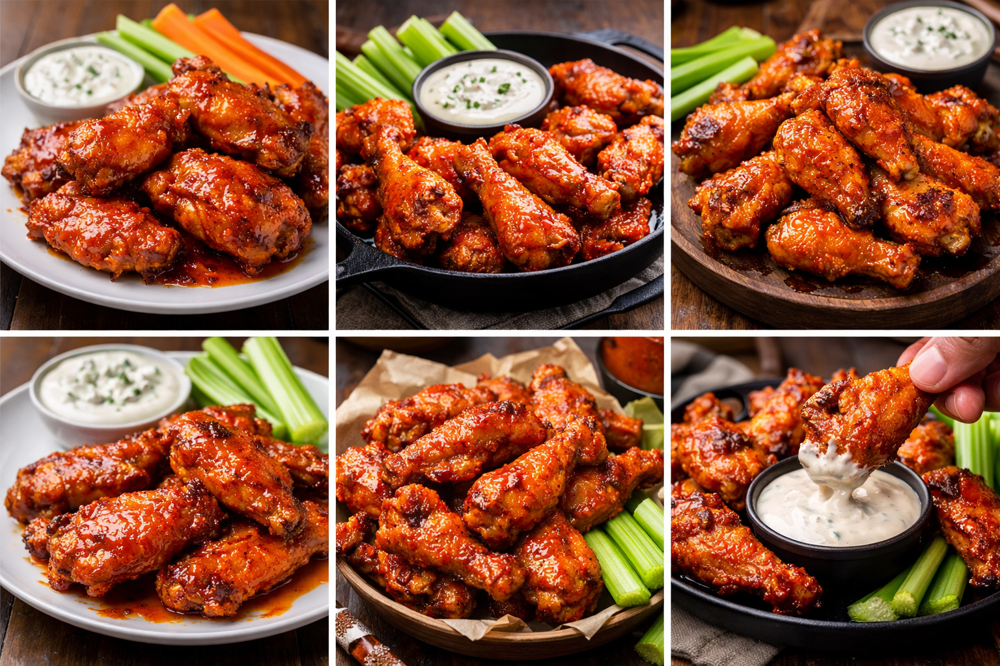

Oven Baked Crispy Buffalo Chicken Wings

These buffalo wings are crisp on the outside and tender within, coated in a glossy, fiery sauce that balances vinegar sharpness with buttery richness. The heat is assertive but controlled, clinging to the skin rather than overwhelming the meat. Served hot with cooling celery and blue cheese or ranch, they deliver contrast by design—fat against acid, crunch against cream—making them a benchmark of American bar food done correctly.
Ingridients
- 1kg of chicken wings, split and tips removed
- 1 tablespoon baking powder (not baking soda)
- 1 teaspoon salt
- 1 teaspoon of garlic powder
- 1 teaspoon of paprika
Buffalo Sauce Ingridients
- 60 ml hot sauce (Frank’s RedHot is the standard)
- 45 g unsalted butter
- 1 rablespoon of honey(optional, for balance)
Instructions
- Pat the wings very dry with paper towels. Moisture is the enemy of crispiness.
- In a bowl, toss wings with baking powder, salt, garlic powder, and paprika until evenly coated.
- Arrange wings on a wire rack set over a baking tray. This lets air circulate underneath.
- Bake at 220°C (425°F) for 45–50 minutes, flipping halfway, until deeply golden and crisp.
- While the wings bake, gently melt butter and mix with hot sauce and honey. Do not boil.
- Toss hot wings in the sauce immediately after baking. Serve hot.
Whay This Works
Baking powder raises the pH of the chicken skin, helping it brown and crisp like fried wings—food chemistry doing quiet magic in the oven.
Serbing Notes
Serve with celery sticks and blue cheese or ranch dressing. For extra heat, add a pinch of cayenne to the sauce.
Home